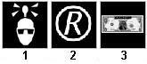
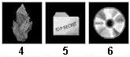
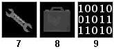
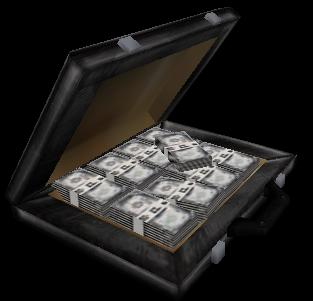
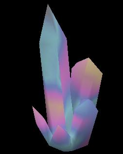
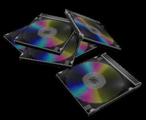
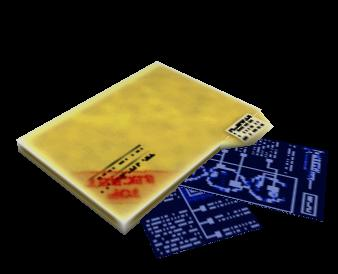
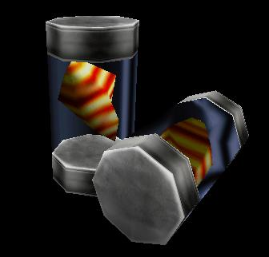
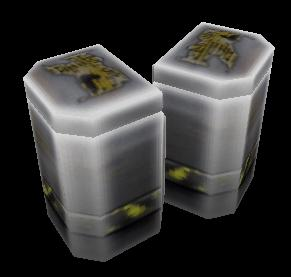
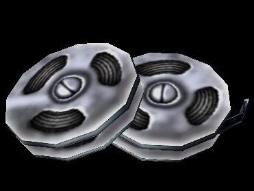

- ITEM_RESOURCE
The resource entity is designed to be a dynamic tool for mappers so that they may add custom gameplay modes to their maps. At its core it's simply an item that is collected and delivered to the administrator, but its customizability allows it to broaden the tactics of the game as well as deepen the atmosphere of a map.
It's probably easiest to explain what an Science & Industry resource entity by giving a couple of examples:
- A precious crystal that your scientists could use in their optics research
- A Top Secret folder of your competitors newest research
- Hazardous toxic waste containers that are needed for biochemical research
- A case of your competitors hard earned cash, stolen from their bank vault
- A biological speciman that needs to be collected intact and quickly by your scientists for it to be of any use
- An armed explosive cannister that could yield valuable advances for your corporation if you can get it to them to disarm in time
What follows is an description of all the flags and key names that can be set on an item_resource, so that mappers can look up what exactly everything does. Then there is a section on general pointers to using resources well in your map. And finally we will go through how to implement some of our example resources.
Feel free to email si@planethalflife.com with any clarification questions or suggestions to improve this document.
Don't respawn [default off] - The resource will spawn once initially, and then never respawn.
Drop Resource [default off]
Stolen Resource [default off] - Bonus (either cash or research) gained from delivering this resource are stolen from its owner.
Random Body [default off] - A random body group will be assigned to this resource each time it respawns. Set the total amount of body groups to choose from with the Body/MaxBodies key value.
Scaled Body [default off] - A body will be given to this resource scaled to the amount of bonus it gives out. Larger bonuses will use larger body groups.
Random Skins [default off] - A random skin group will be assigned to this resource each time it respawns. Set the total amount of skin groups to choose from with the Skin/MaxSkins key value.
Radius Damage [default off] - The End-Timer Damage inflicted will also affect a small radius around the carrier.
Shell Glow Effect [default off] - The resource will be covered in a shimmering glow effect. The color of this is based on this resources team: Blue for MCL, Green for AFD, and White for unaligned.
Description [default "Resource"]
This is the carried resource's name that is displayed on the HUD and to other players.
Pickup Message [default "Deliver this to your administrator"]
A short message that is displayed on the players screen when they pick up this resource.

Carry Icon [default "Generic"]
Choices: Scientist, Generic, Cash, Crystal, Top Secret, CD, Wrench, Briefcase, Binary
You can specify the icon you would like displayed on the HUD when the player is carrying this resource. The icon appears in the same place as the scientist carry icon does, and includes the Description of the resource above the icon. Custom carry icons are not possible outside of this list, but it is our intention to expand this list to accomodate any possible needs.







World Model [default "models/resource_crystal.mdl"]
This is the model that appears on the ground before the player picks it up. The appearance of this model can be altered by using the "Shell Glow Effect" spawn flag, or perhaps by editing it's render effects to make it slightly transparent. All normal rules for rendering effects apply.
{kind=link}
{kind=link}
{kind=link}
{kind=link}
{kind=link}
{kind=link}
{kind=link}
Carry Model [default "models/carryresource.mdl"]
The model that is displayed on the player as he is carrying the resource. Note: later builds will allow this to be a p_ model, with the effect of preventing the player from using any weapons while carrying the resource.
View Model [default (none)]
Note: in conjunction with the ability to specify a p_ model, the resource can also assign a v_ model to display to the player. This is optional.
Body/MaxBodies [default 0]
World models with body groups can select which group to display. If either the "Random Body" or "Scaled Body" spawn flags are set, this number is used to define the number of body groups available in the world model.
Skin/MaxSkins [default 0]
World models with skin groups can select which group to display. If the "Random Skin" spawn flags are set, this number is used to define the number of skin groups available in the world model.
Team [default "Unaligned"]
Choices: Unaligned (No Team), MCL (Blue), AFD (Green)
Like most Science & Industry entites, the resource requires a team setting. The resource, however, can be set to be "Unaligned", so that either team can harvest it. Stolen resources cannot be unaligned.
Cash Stored [default 0]
Choices: No cash, Minor ($1,000), Medium ($5,000), Good ($10,000), Major ($25,000)
A resource with Cash Stored set to greater than zero will yield that amount when deliverd. If the resource is set to be a Stolen Resource, that cash will be deducted from the owner of the resource.
Research Stored [default 0]
Choices: No research, Small (30 sec), Medium (1 min), Large (2 min), Major (3 min)
A resource with Research Stored set to greater than zero will grant that much research when delivered. If the resource is set to be a Stolen Resource, that research will be deducted from the owner of the resource. These modifiers to research only apply to current research, not already completed research. The research bonus is independent of the owners current research goal.
Delay Spawn Time [default 0]
Choices: Don't delay, Short (1 min), Medium (2 min), Long (5 min)
A resource's time before it spawns the very first time can be controlled with this setting. If set to 0, the resource spawns as soon as the map is loaded.
Replacement Time [default 30]
Choices: Instant, Very Quick (15 sec), Short (30 sec), Medium (1 min), Long (2 min), Very Long (5 min)
When a resource is picked it up, unless the No Respawn spawn flag is set, it will respawn at a certain amount of time. This setting controls that amount of time.
Delivery Time Limit [default 0]
Choices: No time limit, Very Quick (15 seconds), Short (30 seconds), Medium (1 minutes), Long (2 minutes)
If a time limit is set with here on the carrier's time to deliver the resource, that can tie in a number of effects. If the player misses the time limit, the effect of his delivery (e.g. cash bonus, research bonus) is scaled by the missed time limit setting (see below). If the resource is set with an End-Timer Damage setting greater than zero, that damage will be infliced to the player when the time runs out.
Effect of missed Time limit [default 0]
Choices: Cancels effect, 25% effect, 50% effect, 75% effect, 100% effect (no change)
If a player misses the delivery time limit, the results of his capture are modified by this setting.
Importance [default "Medium"]
Choices: Insignificant, Minor, Medium, Major, Critical
When the player delivers the resource, his bonus points are determined by the resources impotance.
End-Timer Damage [default 0]
When the delivery timer runs out, this amount of damage is inflicted upon the carrier.
Periodic Carry Damage [default 0]
Periodic damage is set to occure at a rate of this amount of damage per every two seconds.
Damage Type [default GENERIC]
Choices: GENERIC, CRUSH, BULLET, SLASH, BURN, FREEZE, FALL, BLAST, CLUB, SHOCK, SONIC, ENERGYBEAM, DROWN, PARALYSE, NERVEGAS, POISON, RADIATION, DROWNRECOVER, CHEMICAL, SLOWBURN, SLOWFREEZE
The damage inflicted when delivery time is up and the damage inflicted periodically are both of this damage type.
Choices: 100% (normal), 90%, 80%, 70% (scientist carrying speed), 60%
A player's speed when carrying this resource is this percentage of his normal speed. The player's speed returns to normal after the resource is delivered.
Remember that you are not constricted by the values given in the fgd for the fields of your item_resource. These are just suggested values to give you more of an idea of what effect your resource can have. If you want a different value that isn't listed, then feel free to change it manually. Also, these values are directed toward the typical use of these resources. Although typically a resource will slow a player down, this need not be the case. You could, for example, have an item_resource that works as a speed power up, giving the player an enhanced speed, possibly with some periodic damage or end-of-timer damage.
Resources placed in a central neutral area of a map can create interesting warzones for control. Resources placed in or near a lab can provide an alternative to scientist recuiting. Resources in more remote areas can provide harvesting scenarios. Take the placement of a resource into careful consideration.
Above all, don't put an item_resource in your map if it doesn't make sense to have it in there. This is not a required entity for every map. It's easy to go feature happy on a map and end up creating confusing over-complicated gameplay. Keep the goals of the map well defined.
A precious crystal that your scientists could use in their optics research
This is one of the most simple uses of the resource entity. This should be a non-aligned resource, as that we're not stealing it from someone in particular, just harvesting it. Set the model and sprite to match the crystal theme, and then customize the skin and body to your taste. A nice touch here can be to use the random body option with a cluster of crystal resources in order to give it a natural look. Give the crystal resource a small research stored amount, and decide whether it should be collected once or respawn periodically. Other possible effects include giving it an instant delivery time effect, and then set it to inflict some slash damage. That way the player will take damage in harvesting the sharp crystals.
A Top Secret folder of your competitors newest research
This is similar to our crystal resource, except that it's associated with a team, will be locating inside their base, and will probably yield a higher research bonus.
Hazardous toxic waste containers that are needed for biochemical research
Another un-aligned resource, but with a twist. The hazardous waste does periodic damage, so set that value to a small number (1 or 2 should do), and give it the damage type RADIATION. Give the entity some sort of research bonus upon deliver (probably of decent size, due to the danger involved in carrying it).
A case of your competitors hard earned cash, stolen from their bank vault
Similar to the Top Secret folder, except that this resource stores cash instead of research, and that it's a stolen resource. If the owner doesn't protect this entity well, they'll be hurting twice as bad.
A biological speciman that needs to be collected intact and quickly by your scientists for it to be of any use
Give the resource some sort of medium to large resource bonus. Set a delivery time limit, and then set the effect of a missed time limit to be low, like 25-50%. For a more drastic effect, you can set the effect to negative (i.e. -50%), and you're company will actually lose time on a botched delivery.
An armed explosive cannister that could yield valuable advances for your corporation if you can get it to them to disarm in time
Set delivery time limit for the bomb's detonation time. Give it a large amount of BLAST damage for a missed time limit, and make it radius damage for extra carnage. If the player makes it in time, give the company a good-sized research/cash bonus. Otherwise that player just bought a one-way ticket to the cloning machines.